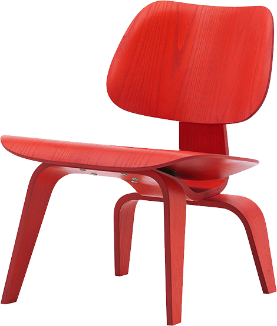
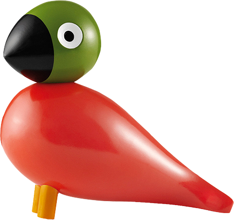
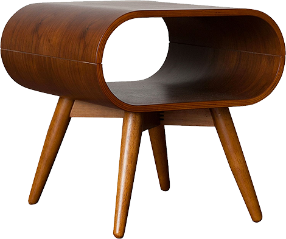

NEW NOW
Eames LCW Chair
Red Stained
This stunning red ash chair from Vitra has
matured into an iconic piece of furniture.
DISCOVER NOW

TRENDY
Painted Beech
Songbird
Add whimsy and charm to any space with this
Pop Songbird from Kay Bojesen.
DISCOVER NOW

EXCLUSIVE
Loop Walnut
Side Table
Announce your love for vintage furnishings
with the marriage of angles and curves.
DISCOVER NOW
